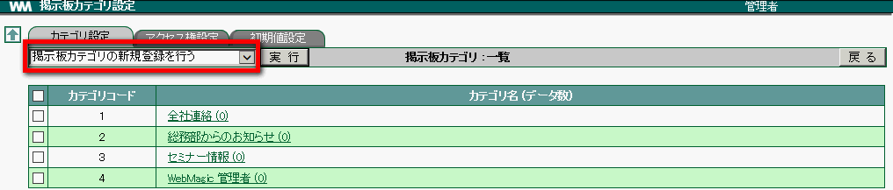
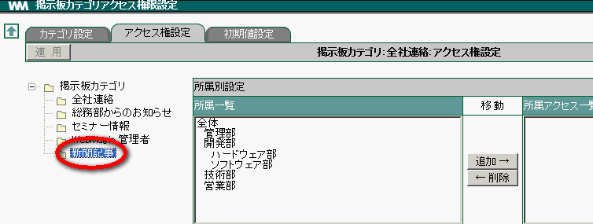
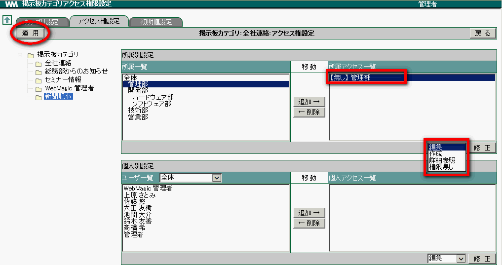

5. 掲示板¶
掲示板では、情報を分類分けする「カテゴリ」を設定します。カテゴリごとにアクセス権が設定できます。例えば「営業部のみが閲覧できるカテゴリ」や「田中さんと加藤さんだけが書き込むことができるカテゴリ」の設定ができます。
5.1. 掲示板のカテゴリを設定する¶
掲示板のカテゴリを設定します。また、設定したカテゴリに対し所属単位、ユーザー単位ごとにアクセス権の設定もできます。
メニューの
 をクリックします。
をクリックします。 をクリックします。
をクリックします。プルダウンメニューより [掲示板カテゴリの新規登録を行う] を選択し、 実行 をクリックします。

掲示板カテゴリ設定の各項目を入力し、 OK をクリックします。 [1]

Note
カテゴリコードには任意の数字を入力します。複数のカテゴリを登録する場合、カテゴリコードが重複しないようにします。また、複数のカテゴリを登録した場合、カテゴリはカテゴリコードが若い順に表示されます。
5.2. カテゴリのアクセス権を設定する¶
[アクセス権設定] タブをクリックします。

アクセス権を設定したいカテゴリを左のツリーより選択します。

「所属一覧」からアクセス権を設定したい所属を選択し、 追加→ をクリックします。

「所属アクセス権一覧」から所属を選択し、設定したいアクセス権をリストから選択します。

適用 をクリックします。
Note
個人へのアクセス権設定も所属と同様の操作で 追加・削除 を行います。
<アクセス権の説明>
| 編集 | 行事を作成することができ、自分または他人が作成した行事の編集・削除が行えます。 |
| 参照 | カテゴリに書き込まれている情報を閲覧できます。（登録はできません） |
| 作成 | カテゴリに情報を書き込むことができます。 |
| 権限無し | カテゴリにアクセスできません。 |
5.3. 掲示板のカテゴリを修正する¶
メニューの
をクリックします。- をクリックします。
修正したい「カテゴリ名」をクリックします。

各項目を修正し、 OK をクリックします。
5.4. 掲示板のカテゴリを削除する¶
メニューの
をクリックします。- をクリックします。
削除したいカテゴリにチェックをつけて、プルダウンメニューより [チェックされた掲示板カテゴリを削除する] を選択し、 実行 をクリックします。

確認メッセージが表示されたら、 OK をクリックします。
Warning
カテゴリを削除すると、書き込まれている情報も削除されます。